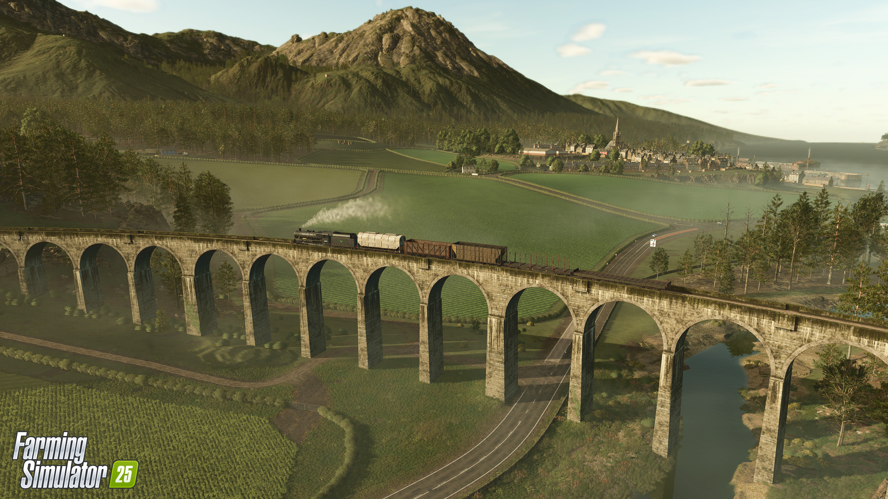
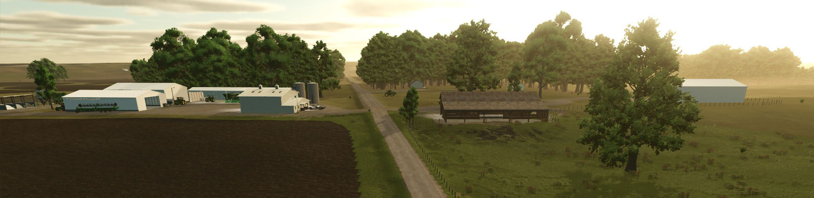
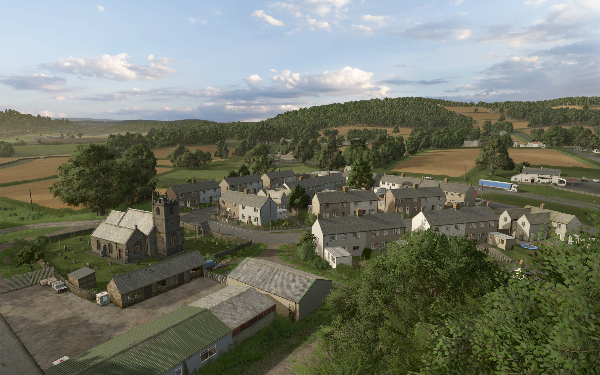
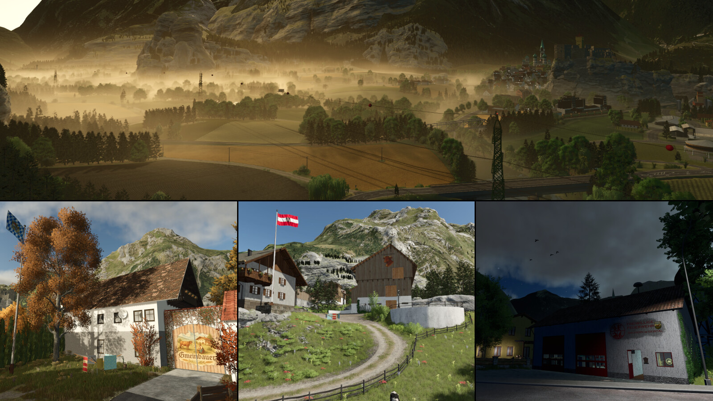

Our ongoing home server. Scenic Scottish village layout featuring custom fish breeding networks, large viaducts, and castle restoration projects.

140 massive fields (2,400+ acres). Pre-placed multi-player farms, wide roads, curved rows, and native double-cropping.

60+ rolling fields with hedgerows. Features 4 fully developed yards ideal for 4 separate teams. Focuses heavily on livestock.

108 small fields (1-2 ha). Alpine mountain passes. Built-in multiplayer mode where farms stay hidden until bought.